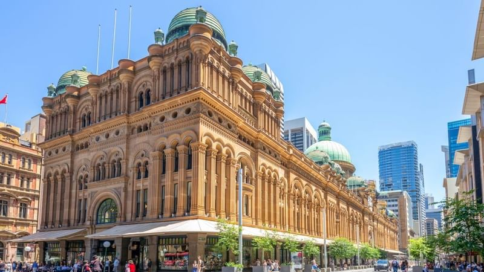
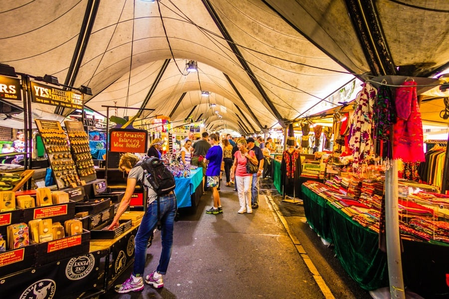
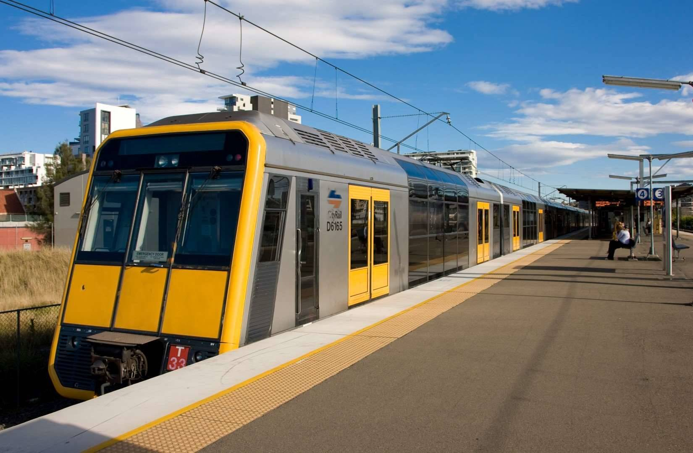

Exploring Sydney

Sydney Opera House
The Sydney Opera House is one of the most famous landmarks in the world, known for its unique sail-like architectural design. Located at Circular Quay, it serves as a major performing arts center hosting concerts, театers, and events. Its position by the harbor also provides stunning views, making it a key symbol of Australia’s culture and identity.

Sydney CBD
Sydney’s Central Business District is the economic and commercial center of the city. It is filled with modern skyscrapers, offices, shopping areas, and restaurants. The CBD reflects a fast-paced urban lifestyle while still maintaining access to public spaces like parks and waterfront areas.

The Rocks Market
The Rocks Market is located in one of the oldest parts of Sydney, rich in history and culture. It offers a variety of handmade crafts, local food, and unique souvenirs. The area combines historic buildings with modern tourist attractions, giving visitors a glimpse into Sydney’s past and present.

Public Transport
Sydney’s public transport system includes trains, buses, ferries, and light rail. It is well-organized, efficient, and easy to navigate using systems like the Opal card. The transport network connects different parts of the city, making travel convenient for both residents and visitors.